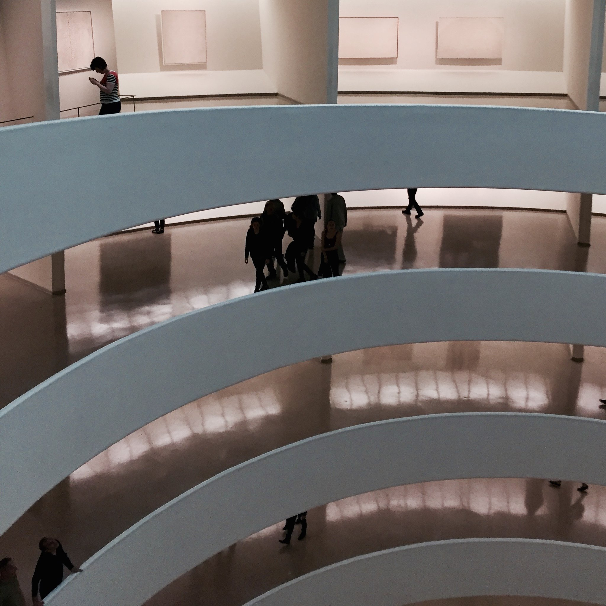
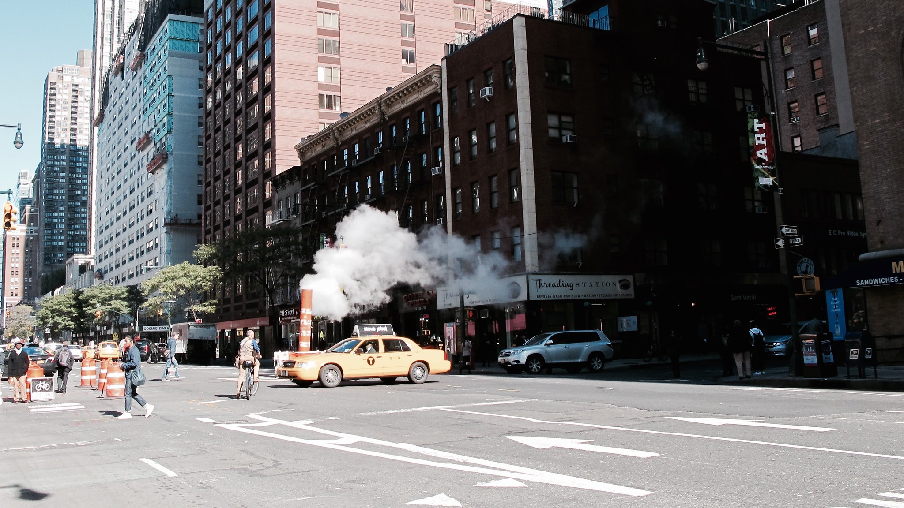
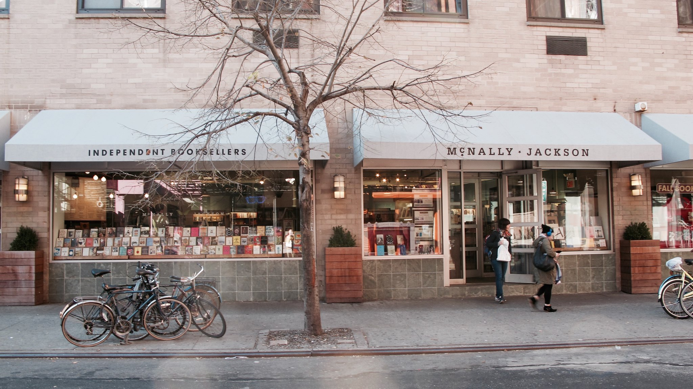
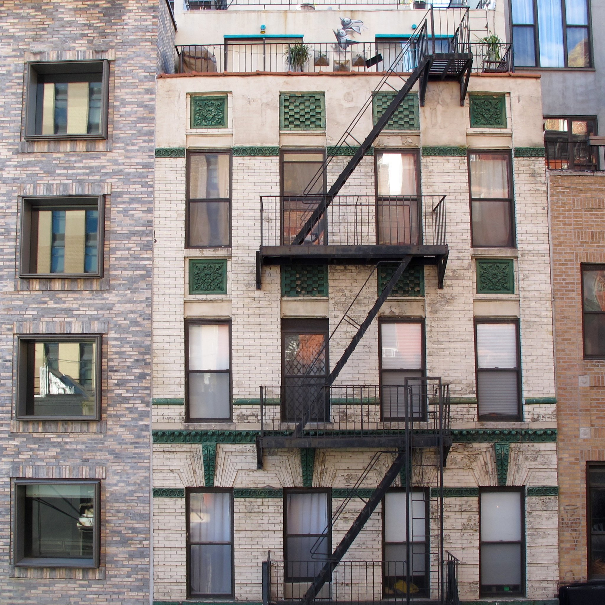
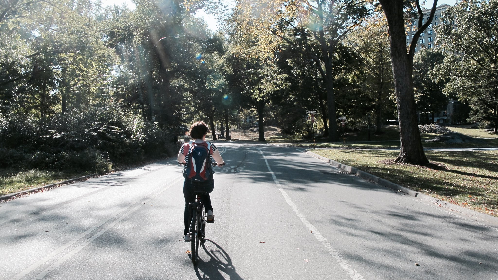

First We Take Manhattan
2015-10-29
In October we took a trip to the mid-Atlantic cities of the United States: New York City, Washington, D.C. and Philadelphia. First we spent a week staying in an apartment on the Lower East Side. These photos are from Manhattan.
A walk along the High Line from Chelsea Market to the Hudson Yards.
The construction site here is the largest development ever in the United States.

We went to a few of the museums of course: the Guggenheim, MoMA and The Metropolitan. I took early runs along the East River under the bridges.
Another day we rode bikes around the big loop of Central Park.


We got to the Housing Works Bookstore and to McNally Jackson. Didn’t make it to Strand but hopefully next time.
Your standard tourist skyscraper view of Gotham, of course. I think the viewing point from the balcony bar at the Met is better, perched above Central Park.


I would recommend a tour of the building maintained at the Tenement Museum on Orchard Street on the Lower East Side. Each floor is preserved at a different decade in its history, and tells the story of the migrant families living there at each point. It’s a time capsule, boarded up in the 1930s and untouched until the museum bought the building in 1988.
Morningside Heights and the campus at Columbia.
Livy was smart enough to book us tickets to go up to the crown in advance, so we got to go up there.
